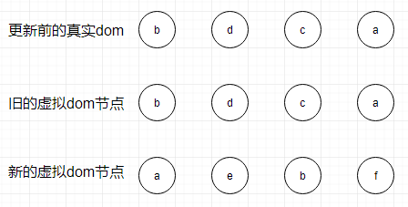
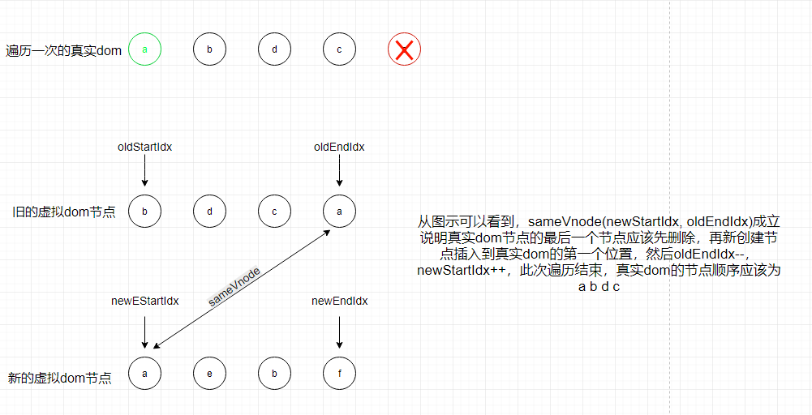
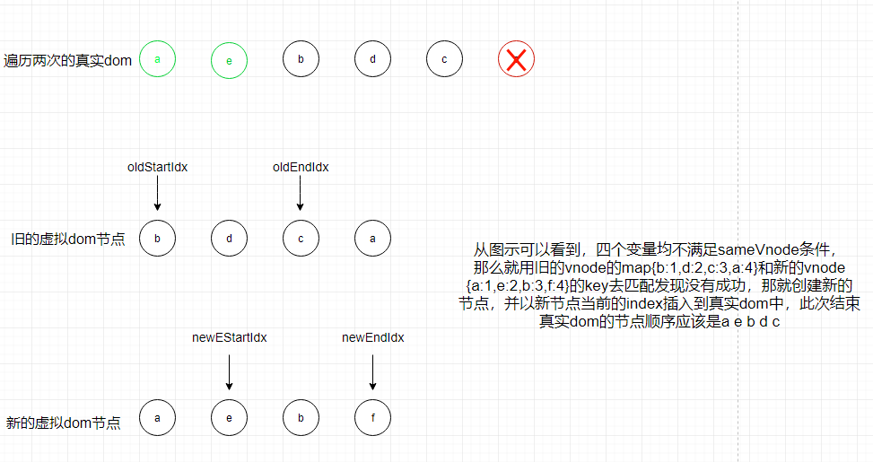
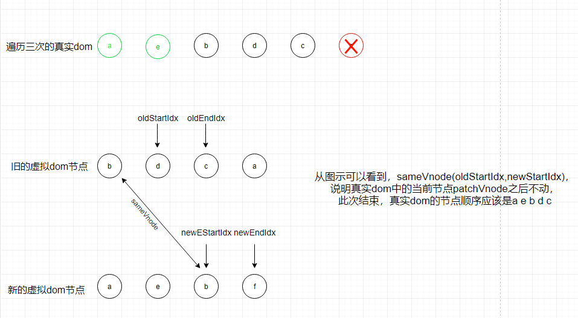
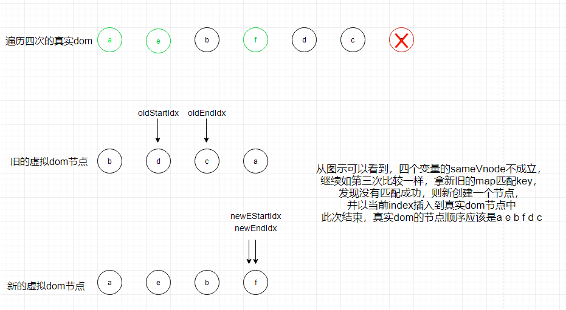
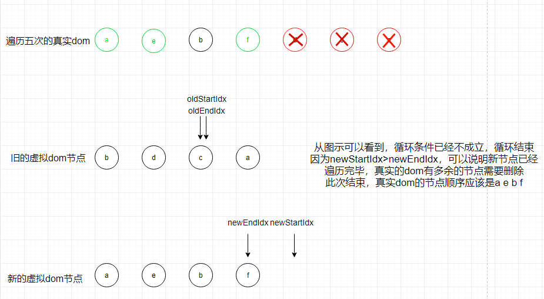

首先，Vue在1.0的时代还没有虚拟dom这个概念，1.0时候频繁操作dom使用的是fragment来做修改，当然和vdom是无法媲美了，但是和innerHTML来比它还是提高了很大程度的性能的，毕竟fragment是可以比innerHTML减少很多次重排的。而Vue的virtual-dom（后文简称vdom吧~打字好累的哦~_~）是借鉴了React的，因为virtual-dom是React中的一个重要特性，而React是先于Vue发行问世的。所以很大程度上，Vue也是作为后来者吸取了React和Angular的经验，并在其上做了改进，才得以发展至今天的成果。
1. 为什么会有vdom的出现？
假设如果没有vdom，那么我们在事件绑定的方法中需要频繁地操作真实的dom来达到视图更新的目的，但是一旦我们这个应用变得非常大，那么由于频繁的dom操作带来的性能降级是非常大的，而且非常难以维护。所以，有了vdom的概念。具体是什么呢？就是将我们真实的dom抽象成一个以js对象构成的抽象树，然后在抽象树上做修改，将差异更新到真实的视图层。酱紫不仅减少了很多不必要的操作，还大大提高了性能，不得不说，大牛还是大牛~
2. 关于VNode
先看一眼vue源码中对于vnode的定义，目录：/src/core/vdom/vnode.js
1 | export default class VNode { |
打个比方，现在定义一个vnode的数据结构如下：1
2
3
4
5
6
7
8
9
10
11
12
13
14
15{
tag: 'div',
data: {
class: 'app',
},
children: [
{
tag: 'div',
data: {
class: 'say'
},
text: 'hello world!'
}
]
}
在真实的dom中渲染是酱紫的：1
2
3<div class="app">
<div class="say">hello world!</div>
</div>
vnode的源码中还有一些createEmptyVNode（创建一个空VNode节点）、createTextVNode（创建一个文本节点）、createComponent（创建一个组件节点）、cloneVNode（克隆一个VNode节点）以及createElement（创建一个虚拟节点）等方法的定义，在此不多做赘述，回到更新视图。
3. 更新视图
聊聊Vue的双向数据绑定 中已经总结过，当数据发生改变的时候，会触发该数据的setter，而setter会触发Observer的Dep调用notify函数来通知对应的Watcher调用update方法来更新视图。接下来就看看update方法的定义，源码目录：src/core/instance/lifycycle.js
1 | Vue.prototype._update = function (vnode: VNode, hydrating?: boolean) { // 接收的第一个参数就是vnode，在这里会将新旧vnode对象做__patch__ |
这里可以看到最为核心的diff过程，是通过vm.patch来完成的，这也是vdom的核心方法，主要完成了prevVnode和vnode的diff过程并根据需要操作的vdom节点打patch，最后新生成的真实dom节点并完成视图的更新工作。
4. diff过程 —— patch
1 | // src/core/vdom/patch.js |
上面可以看到只有在对oldVnode和vnode进行类型判断时有个sameVnode方法，这个方法决定了是否需要对oldVnode和vnode进行diff及patch的过程。1
2
3
4
5
6
7
8
9
10
11
12
13
14
15
16
17// src/core/vdom/patch.js
function sameVnode (a, b) {
return (
a.key === b.key && (
(
a.tag === b.tag &&
a.isComment === b.isComment &&
isDef(a.data) === isDef(b.data) &&
sameInputType(a, b)
) || (
isTrue(a.isAsyncPlaceholder) &&
a.asyncFactory === b.asyncFactory &&
isUndef(b.asyncFactory.error)
)
)
)
}
它需要传入两个vnode进行基本属性的比较，只有当两个VNode的tag、key、isComment都相同，并且同时定义或未定义data的时候，且如果标签为input则type必须相同的情况下才认为这2个vnode只是局部发生了更新，然后才会对这2个vnode进行diff的patchVnode操作，如果这2个vnode的基本属性存在不一致的情况，那么就会直接跳过diff过程，然后根据vnode创建一个真实的dom，同时删除旧的dom节点。
1 | function patchVnode (oldVnode, vnode, insertedVnodeQueue, removeOnly) { |
这里主要捋一下patchVnode的规则：
- 首先进行文本节点判断，如果新老节点文本内容不同，则直接进行文本的替换
- 在新虚拟节点没有文本节点的情况下进入其子节点的diff
- 当新老节点都存在子节点且不相同的情况下，调用updateChildren方法对其子节点进行diff
- 如果新虚拟节点存在子节点，老虚拟节点没有子节点，假设老虚拟节点有文本内容那就得先清除老节点的文本内容，然后调用addVnode方法将新的虚拟子节点添加到真实父节点中
- 如果老节点有子节点而新节点没有子节点，则删除真实节点的老节点下的子节点
- 如果新老节点都没有子节点，那就只做文本的替换
5. 更新子节点——updateChildren
1 | function updateChildren (parentElm, oldCh, newCh, insertedVnodeQueue, removeOnly) { |
有没有觉得长的吐血？？？嗯，我难产了一个周的vdom源码分析，就是卡在这里，头大······所以换种思考分析方式，不一行一行分析了，先来说下这部分代码做了什么——
- 首先，它给新旧孩子节点的队列头和尾均设置了变量标记，oldCh的为oldStartIdx和oldEndIdx，newCh的为newStartIdx和newEndIdx。
- 接着对应索引和vnode间的关系：oldStartIdx => oldStartVnode，oldEndIdx => oldEndVnode，newSatrtIdx => newSatrtVnode，newEndIdx => newEndVnode
- 对上述对应的四个变量两两做比较，2*2种情况：
- 如果oldStartVnode和newSatrtVnode或者如果oldEndtVnode和newEndVnode是同一个节点，则直接将该oldVnode节点进行patchVnode即可，完了变量指针向中间靠拢
- 如果oldStartVnode和newEndVnode是同一个节点，则说明原来的第一个节点跑到了最后一个位置，则进行patchvnode
的同时还需要将对应的真实dom节点移动到oldEndVnode后面 - 如果oldEndVnode和newStartVnode是同一个节点，则说明原来的最后一个节点跑到了第一个位置，则进行patchvnode
的同时还需要将对应的真实dom节点移动到oldStartVnode前面 - 如果上述的四种如果都不匹配——
- 则会通过createKeyToOldIdx函数根据oldCh的key得到oldKeyToIdx，oldKeyToIdx是个map，其内部存放的是key为oldCh的Vnode，value为对应的index。用newStartVnode的key与map表做匹配，如果存在有一致的key并且同时满足sameVnode，那么patchVnode的同时会将成功匹配的节点移动到真实dom节点的前面；否则的话，就将newCh的指针后移并将指向的节点赋为newStartVnode
- 如果newStartVnode的key在map中匹配不到一致的key或者匹配到了一致的key但是sameVnode结果为false，这时候就调用createElm方法创建一个新的节点插入到真实的dom节点
- 当oldStartIdx > oldEndIdx或者 newStartIdx > newEndIdx时结束循环，这个时候说明至少有一个已经遍历完了就会结束比较，但是也需要处理多余或者不够的真实dom节点：
- 当结束时oldStartIdx > oldEndIdx，这个时候说明旧的vnode已经遍历完了，但是新的还没有，说明新的vnode节点比老的vnode多，也就是比真实的dom多，需要将剩下的vnode节点调用addVnodes（批量调用createElm方法）将这些节点根据自己的index插入到真实的dom中去
- 当结束时newSatrtIdx > newEndIdx，这个时候说明新的vnode已经遍历完了，但是老的节点还有剩余，需要将真实dom节点中多余的节点调用removeVnodes将多余的真实dom节点删除
我觉得上面的规则好多呀，有没有很头大，比刘智林的头还大的感觉？emmmm，那我来举几个图示的例子，你就懂了~

接下来开始第一次比较：

第二次比较：

第三次比较

第四次比较

最后一次比较！！！

我觉得我懂了，你懂了没。。。